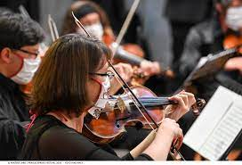
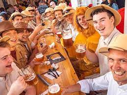
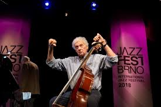

The Bohemian Carnevale is held every year in Prague during the carnival season that is, at the end of February and start of March. This festival symbolises bright display of superb ideas and dazzling creativity. It takes people back to the spectacular history and celebrations of the middle Ages. The celebrations take place at many public spaces, palaces, museums, galleries and theatres, restaurants and shops too.
The city of Prague celebrates the Prague Spring International Music Festival in the month of May-June every year. It is the most famous festival which features musical events of outstanding performing artists from all around the world, a number of amazing orchestras and chamber music ensembles from different countries. The festival started in the year 1946 under the patronage of Czech President Edward Benes, and since then it has been the epitome of musical excellence. Along with the astounding performances by the music maestros, the festival also commemorates important music anniversaries and landmarks.
The Czech Beer Festival is the major and the most famous beer festival in the Czech Republic. The celebration lasts for 17 days in the month of May and is a top attraction amongst travellers from different countries. The festival features around 120 varieties of beer, from which, 70 brands are from the Czech Republic and the rest are foreign brands from countries like USA and UK. There is a space for about 10,000 people and the serving staff of approximately 200 girls and boys who are at service of the guests with attractive traditional attires.
This festival has been a popular event since 1964. Every year it held during October-November. Performances of Czech and international musicians usually take place at the Reduta Jazz Club. Jazz legends such as Mr. Acker Bilk & his Bristol Paramount Jazz Band, Duke Ellington Orchestra, Benny Goodman, B.B. King, New York Voices, Mal Waldron and Albert Mangelsdorff, Boris Kozlov have performed in this festival.